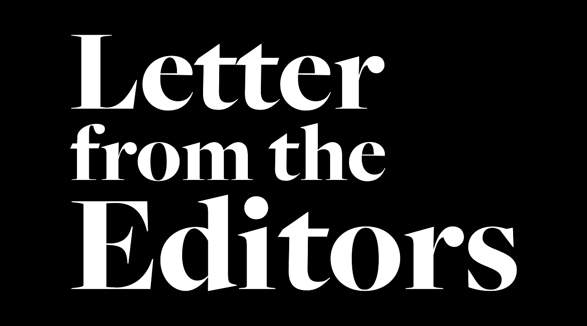

Andrew Hamilton Leaves Behind a Divisive Legacy
Hamilton led NYU through an eventful tenure, but his legacy as NYU President will forever be tainted with his inability to stand with Palestine.
Abhyudaya Tyagi, Huma Umar, Grace Bechdol
Apr 18, 2022
Illustration by Tom Abi Samra.
On April 13 2022, Andrew Hamilton, the 16th president of New York University, announced his resignation in an email to the entire NYU community. Hamilton, who has been at NYU since 2016, helped steer the university through the Covid-19 crisis. As he was keen to state in his email, Hamilton’s tenure coincided with an improvement in research rankings, number of undergraduate applicants and racial and socioeconomic diversity.
But what NYU may have gained in rankings under Hamilton, it has lost in the quest for justice, particularly in relation to the Israeli occupation of Palestine. In his presidency, Hamilton has consistently used his bully pulpit to undermine Palestinian causes and deepen NYU’s complicity in Israel’s crimes.
48 hours after Hamilton’s email reached the inboxes of NYU students, Israeli soldiers raided the Al Aqsa mosque – one of the holiest sites in Islam – injuring more than 150 Palestinians. It goes without saying that Hamilton chose to maintain his silence on the atrocity. This would perhaps be for the best, because Hamilton’s voice on the issue has always been a counterproductive one.
Within six months of his presidency, Hamilton chose to invalidate Palestinian experiences. When NYU’s Graduate Student Organizing Committee chose to endorse the Boycott, Disinvestment and Sanctions movement, Hamilton provided an unsolicited statement defending NYU’s involvement in Israel. The statement was also coupled with a threat against union members who participated in the boycott, suggesting that “whatever 'pledges' union members may or may not have taken does not free them from their responsibilities as employees of NYU, which rejects this boycott."
In April 2018, Hamilton went a step further, denouncing BDS in a NYU town hall, only a week after 50 student groups, led by the Jewish Voice for Peace and NYU Students for Justice in Palestine joined together to support the movement. But the NYU President’s magnum opus in Palestinian erasure would come the following year. When Students for Justice in Palestine was awarded NYU’s President’s Service Award, Hamilton chose to be shamefully absent from the conferring of an award that bore his office’s name. When that award attracted criticism from right-wing and Zionist media, Hamilton penned a disgraceful op-ed in the Wall Street Journal. With rhetoric more fitting of a right-wing politician than the president of a university that prides itself on its progressiveness, Hamilton had the audacity to describe the NYU chapter of Students for Justice in Palestine as a divisive organization. Notably, he did not use the same words to describe pro-Israel groups that allegedly harrassed people of color. With a self-righteousness unbecoming of an individual defending apartheid, NYU’s President suggested that, if it was up to him, SJP would not have received the award.
When it comes to injustice, silence is complicity. But let us not pretend that Hamilton’s only blunder was silence. As the above examples show, Hamilton went beyond silence to actively undermine Palestinian resistance. Instead of listening to Palestinian voices on the issue, Hamilton chose to patronize them and suggest that he knew what was best for the resolution to the conflict. Anti-Palestinian sentiment and the erasure of Palestinian voices and experiences is a university-wide, even global, phenomena, and Hamilton is not isolated from this. He may be an outcome of these circumstances, yet, for a man wielding the influence and power that Hamilton does, it is especially unfortunate that he chose to actively disparage and demonize the Palestinian cause. He may have valid reservations about the BDS movement, but to interject himself into the debate by erasing Palestinian voices was the hallmark of a man grossly unfit to lead a university like NYU to live up to its ideals of inclusion, justice and equity.
Hamilton’s prejudice extended throughout the Global Network and was particularly echoed in NYUAD Vice Chancellor Mariet Westermann’s shameless silence last year in the face of countless pleas by the student body, especially Palestinians, as Israel killed more than 300 Palestinian civilians across 2021 and forcibly evicicted thousands from the neighborhood of Sheikh Jarrah.
Hamilton’s other achievements may or may not have been considerable. But they mean very little, if the university consistently stands with the forces of injustice. Claiming to stand against racism is meaningless if you do not stand in solidarity with ordinary Palestinians. To stand against the Russian invasion of Ukraine means very little if the university does not stand against the Israeli occupation of Palestine.
To stand with Palestine is to stand with humanity. And in that very basic human mission, Andrew Hamilton was a miserable failure.
Abhyudaya Tyagi and Grace Bechdol are Editors-in-Chief. Huma Umar is Managing Editor. Email them at feedback@thegazelle.org
related
Macron and the rise of the French far
Last Sunday’s elections cemented the far right as a prominent player in French politics. How did Macron, the supposed progressive, contribute to its rise?
“Clashing”: What Western Media
Narratives Surrounding Sri Lanka Miss
Sri Lanka is hurting — but it faces a revolutionary movement with great potential for change. Leading media organizations need to more accurately chronicle the struggles against a repressive regime.
trending
Andrew Hamilton Leaves Behind a Divisive Legacy
Abhyudaya Tyagi, Huma Umar, Grace Bechdol
Our Internalized Male Gaze (And the Problem with not
Thank you, We Will Miss You — Legacy of NYUAD
Leaving Abu Dhabi with More Questions Than Answers
StuGov Elections — Meet the Candidates
Sara Vuksanovic, Charlie Fong, Stefan Mitikj